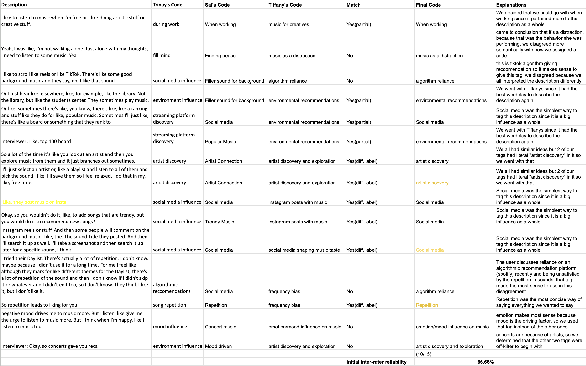
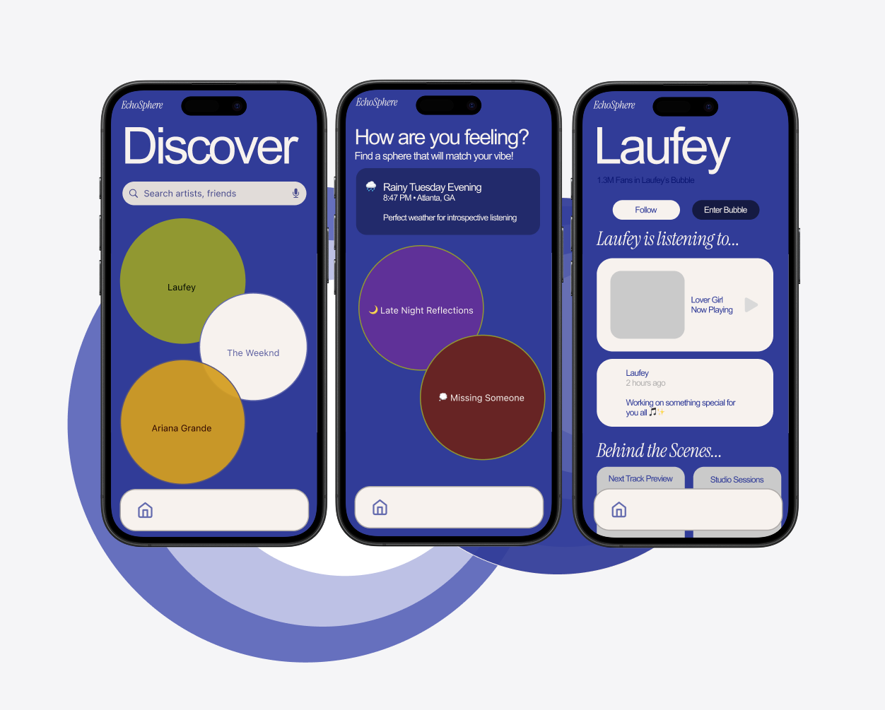
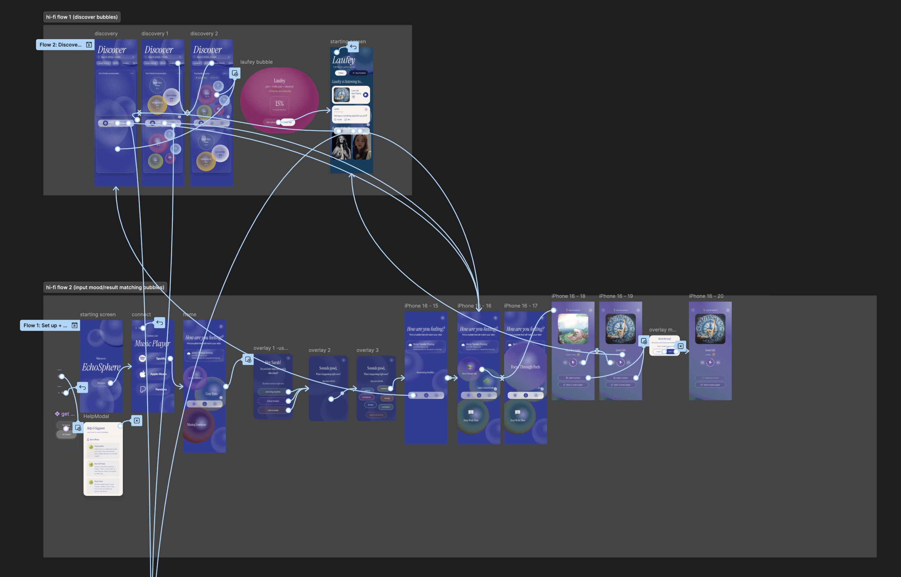

Taguette coding
Taguette let us transcribe interviews, highlight segments, and tag quotes with codes that captured what each moment was really about—so we could compare patterns across participants.

A video introduces listener feedback, then five listener quotes in message-style bubbles, spread across the layout with two on the left, one in the center, and two on the right: I'm sick of the algorithm; i miss the feeling of finding a new upcoming artist; It's the same songs over and over again; I can't find good underground artists; i discover my music on tiktok now. Then the headline You told us, then three lines of copy: Spotify and Apple Music keep listeners in algorithmic filter bubbles. The same recommendations recycle, leaving little room for discovery or connection between artists and fans. Closing copy: This project started with you. We did the research. Then research scope, animated: forty survey responses appears first, then eight in-depth interviews with Georgia Tech students.
“I’m sick of the algorithm”
“i miss the feeling of finding a new upcoming artist”
“It’s the same songs over and over again”
“I can’t find good underground artists”
“i discover my music on tiktok now...”
Spotify and Apple Music keep listeners inside algorithmic filter bubbles.
The same recommendations come back again and again—leaving little room for real discovery, or for artists and fans to truly connect.
This project started with you. We did the research.
40 survey responses
8 in-depth interviews
with Georgia Tech students
Immersion makes it listenable.
Context chooses the track.
Immersion is the signal—music that pulls you in and holds you there. Live performances deepen it; every day, craft finishes the story: rhythm, arrangement, and lyrics that earn your attention.
Mood, weather, and where you are steer the moment. Variety matters—feeds surface sounds you would never search for. When a hook gets stuck in your head, it wins over whatever is queued next.
Raw interviews don't turn into insights on their own—we needed a system.
From scattered quotes to a direction the whole team could design to.
Swipe or scroll sideways for more
Taguette let us transcribe interviews, highlight segments, and tag quotes with codes that captured what each moment was really about—so we could compare patterns across participants.

We coded the same interview excerpts independently, then lined up our tags in a comparison table. Initial agreement was 10 of 15 excerpts (66.66% interrater reliability)—disagreements were discussed and reconciled into a shared codebook before synthesis.

In FigJam, we sorted sticky notes and codes into clusters of related ideas—affinity mapping helped us see which patterns kept showing up and which belonged together before we named broader themes.

In FigJam, we grouped recurring codes and drew connections between ideas—turning scattered tags into themes we could tie back to the problem space.
With aligned codes and a shared mind map, we collapsed patterns into three themes, then validated each against survey data so design direction was evidence-backed—not just anecdotal.
From our analysis, three key themes emerged that shaped our design direction:
Recurring patterns → validated themes → design moves
What we heard
Users reported getting tired of the same recommendations and craved novelty and freshness in their listening experience.
Design implication
Design for serendipity and anti-repetition mechanics.
What we heard
While many users depend on algorithmic suggestions, some actively seek new artists and genres as an intentional, enjoyable activity.
Design implication
Balance passive discovery with exploratory tools that give users agency.
What we heard
Users differentiate between casual background listening and focused engagement. Platforms ignore mood, environment, and social setting.
Design implication
Build context-aware features that adapt to how users actually listen.
Three themes → one direction for Echosphere
Ready to explore and prototype
Current platforms optimize for prediction, not exploration. Users don't just want the algorithm to guess what they'll like.
They want agency in discovering music that matches how they actually feel.
EchoSphere transforms the “filter bubble” from a limitation into a feature,
creating spaces where discovery, connection, and emotion converge.
From rough flows to polished screens, each round of prototyping made the idea easier to critique, test, and refine.
The carousel walks through how the work progressed from early ideas to something we could put in front of people.
Swipe or scroll sideways for more

Early sketches and flows to pressure-test the concept before investing in detail.
Wireframes and clickable paths that clarified hierarchy, navigation, and core tasks.

Visual design, typography, and UI states aligned with the Echosphere look and feel.
User testing with new participants showed that some novel interactions were not immediately obvious. We responded by exploring guides and lightweight documentation so people could learn unfamiliar flows without friction.
Three product pillars—framed the way we pitched the experience: clear intent, human connection, and emotional fit.
Swipe or scroll sideways for more
Screen recording of artist profile, follow, and listening context in the prototype.

Diagram of how listeners move through artist and friend spheres—from discovery through immersive content, bubble sharing, and ongoing connection.
Swipe or scroll sideways for more
Screen capture of mood and environment discovery in the prototype.

Diagram of the mood and environment journey—from contextual signals and vibe checks through personalized discovery paths.
Explore the hi-fi flow in Figma—tap through navigation, key screens, and interactive states.